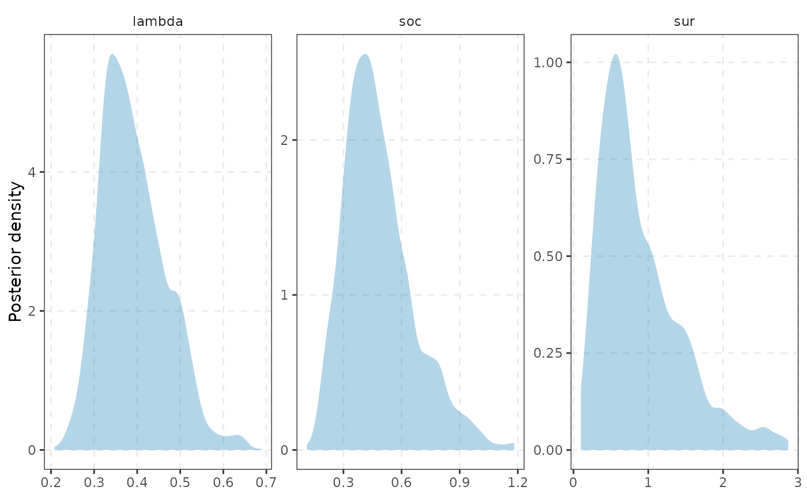
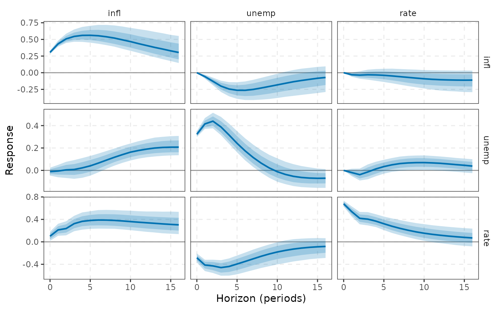

Estimates a Bayesian VAR. The default conjugate Minnesota prior is sampled exactly for fixed hyperparameters and with a compiled Metropolis-within-direct-draws sampler for hierarchical hyperparameters (Giannone-Lenza-Primiceri 2015). Everything inside the MCMC loop is C++.
Usage
bvarm(
Y,
p = 4L,
prior = prior_minnesota(),
ndraw = 5000L,
nburn = 2000L,
const = TRUE,
trend = FALSE,
exog = NULL,
scale = 0.5,
adapt = TRUE,
sv = FALSE,
thin = 1L,
sv_prior = c(a = 5, b = 0.04, V0 = 10),
store_h = FALSE,
vars = NULL
)Arguments
- Y
data frame (preferred),
tsor numeric matrix (T x K) of endogenous variables. Non-numeric columns of a data frame are dropped; aDatecolumn is kept as$datesand used by the plots.- p
lag order.
- prior
prior_minnesota()(conjugate, exact/hierarchical) orprior_triangular()(equation-by-equation sampler: Minnesota, SSVS or horseshoe, optional stochastic volatility).- ndraw
number of retained posterior draws.
- nburn
burn-in iterations (hierarchical sampler only).
- const
include a constant.
- trend
include a linear trend.
- exog
optional T x q matrix or data frame of exogenous regressors (contemporaneous, treated like deterministic terms; future values are then required for forecasting).
- scale
initial scale of the random-walk proposal.
- adapt
adapt the proposal scale during burn-in towards 25-45% acceptance.
- sv
stochastic volatility (random-walk log-volatility, Kim-Shephard-Chib mixture) – only with
prior_triangular().- thin
keep every
thin-th draw (triangular sampler).- sv_prior
c(a, b, V0): inverse-gamma(a,b) prior on the log-volatility innovation variance (default mean 0.01) and prior varianceV0of the initial log-volatility.- store_h
store the full volatility draws (
ndraw x T x K); the posterior mean path is always kept.- vars
<
tidy-select> endogenous variables (default: all numeric columns of a data frame).
Value
a bvarm object. Use irf(), fevd(), hd(), forecast(), stability();
$draws is a draws object, $hyper the retained hyperparameter draws, $logml the
log marginal likelihood at the mode (or fixed values).
See also
Other Bayesian VAR:
autoplot.mcmc_diagnostics(),
mcmc_diagnostics(),
prior_minnesota(),
prior_triangular(),
tidy.bvarm(),
volatility()
Examples
# \donttest{
fit <- bvarm(yraw, p = 4, ndraw = 2000, nburn = 1000)
fit
#> <bvarm> niw-minnesota BVAR(4), K = 3, 2000 posterior draws
#> log marginal likelihood: -404.25788
#> hyperparameters (posterior mean [5%, 95%]); MH acceptance 0.393
#> mean 5% 95%
#> lambda 0.3918 0.2850 0.5264
#> soc 0.4836 0.2399 0.8267
#> sur 0.8907 0.2539 2.0152
#>
#> posterior mean of B:
#> infl unemp rate
#> infl.l1 1.4254 0.0378 0.4162
#> unemp.l1 -0.2208 1.2625 -0.5882
#> rate.l1 -0.0438 -0.0278 0.7952
#> infl.l2 -0.3401 -0.0091 -0.3550
#> unemp.l2 0.1182 -0.2907 0.5092
#> rate.l2 0.0385 0.0032 -0.0146
#> infl.l3 -0.0871 -0.0518 0.2472
#> unemp.l3 0.0284 -0.1102 -0.0447
#> rate.l3 0.0026 0.0585 0.1025
#> infl.l4 -0.0006 0.0513 -0.2065
#> unemp.l4 0.0380 0.0453 0.1398
#> rate.l4 -0.0018 -0.0086 0.0236
#> const 0.2469 0.3116 0.0478
tidy(fit)
#> # A tibble: 39 × 6
#> response term estimate std.error conf.low conf.high
#> <chr> <chr> <dbl> <dbl> <dbl> <dbl>
#> 1 infl infl.l1 1.43 0.0638 1.32 1.53
#> 2 infl unemp.l1 -0.221 0.0623 -0.323 -0.119
#> 3 infl rate.l1 -0.0438 0.0283 -0.0894 0.00330
#> 4 infl infl.l2 -0.340 0.0978 -0.502 -0.178
#> 5 infl unemp.l2 0.118 0.0826 -0.0114 0.256
#> 6 infl rate.l2 0.0385 0.0315 -0.0128 0.0910
#> 7 infl infl.l3 -0.0871 0.0774 -0.217 0.0389
#> 8 infl unemp.l3 0.0284 0.0725 -0.0920 0.149
#> 9 infl rate.l3 0.00260 0.0271 -0.0424 0.0480
#> 10 infl infl.l4 -0.000603 0.0487 -0.0793 0.0790
#> # ℹ 29 more rows
glance(fit)
#> # A tibble: 1 × 10
#> K p nobs ndraw method logml accept lambda soc sur
#> <int> <int> <int> <int> <chr> <dbl> <dbl> <dbl> <dbl> <dbl>
#> 1 3 4 211 2000 niw-minnesota -404. 0.392 0.392 0.484 0.891
autoplot(fit, "hyper")

plot(irf(fit, horizon = 16))

# }